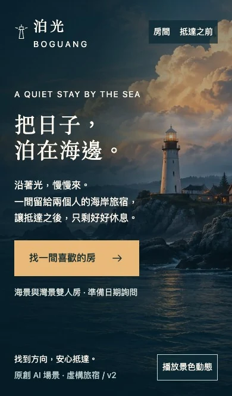
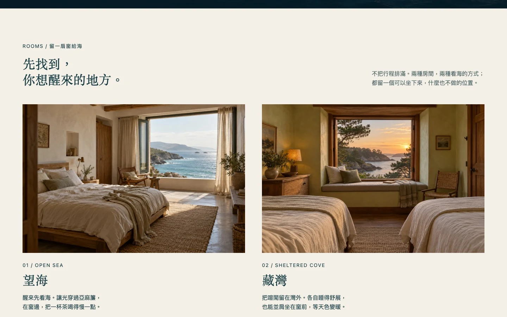
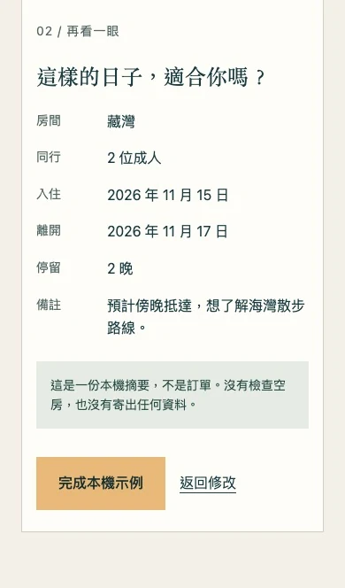

先讓人想留下，
再幫人做決定
假設訪客是想離開忙碌日常、安排海邊短住的兩位成人。他們需要感受到地方的氣質，也需要知道房間的差別、抵達前的條件，以及下一步要準備什麼。
這是一個沒有既有品牌或介面的新題目。使用者授權製作獨立旅宿案例；泊光的名稱、受眾、兩種房型與溫柔的青綠海岸方向由代理提出。結構 A 依序安排抵達場景、房型比較、行前資訊與日期詢問，視覺處理 1 以暮色海面、薄霧與暖光串起全頁。
首屏負責邀請，房型與行前資訊負責判斷。主要入口直接通往房間，訪客不必等待一段展示結束，才能開始評估這次旅行。

海景慢慢流動，
閱讀有自己的速度
使用者提供的 Elaya 展示影片帶來沉浸式天空、海面與燈塔的氛圍啟發。這裡沿用前次工作階段的觀看紀錄，沒有宣稱本輪重新檢視來源；原影片的技術實作也未確認。
泊光重新生成自己的海岸、霧與房間素材，再以原生 CSS 製作霧層漂移、燈束掃光與海面反光。燈束依背景裁切位置對準燈室，手機與桌機各自維持正確起點。參考用在場景組織與安心抵達的意象；文案、品牌、構圖與素材為本案例另行設計。
動態只補充氣氛：訪客可以暫停，減少動態偏好使用靜態景色。拿掉動作後，燈塔、主張與操作入口仍須成立。這些安排的實際表現列入本輪瀏覽器檢查，結果見驗證段落。
工藝方法如何選
主要工藝採用 design-experience 自身的設計方法與 taste baseline。landing-page-design 曾列為候選；其中固定導覽與漸層標題的要求，和這次沉靜的場景方向不合，因此沒有啟用。
本輪實際使用 imagegen 生成原創圖像，並用 animate 設計環境動態。原型使用 HTML、CSS 與 JavaScript，沒有新增依賴。這篇文章沿用既有案例的共用樣式與導覽。


喜歡一片海，
也要選對一間房
海景與灣景雙人房提供兩種想像：面向開闊的海，或留在較安靜的灣邊。房型以窗景、空間與設施說明差別，讓圖片旁有可比較的內容。
原型不放虛構折扣、住客背書或剩餘房數。所有房型條件都是情境內容，無法推論真實價格、可訂日期或住宿品質。
行前資訊接在房型後，讓人先確認抵達與住宿條件，再準備日期詢問。這個順序的設計目標是減少猜測，是否足以支持旅客判斷仍需要真人試用。


帶著想來的日期，
走到一份清楚的摘要
日期詢問是一段本機操作示例，目標是讓訪客看見自己選了什麼，並能在完成前修正。沒有查詢真實庫存或向旅宿送出資料。
- 比較兩種房型，選擇想詢問的一間。
- 填寫今天或之後的入住日期，以及較晚的離開日期；留空或填入不合理的區間，查看錯誤提示。
- 補齊日期，檢查房型與住宿日期摘要。
- 返回修改，確認原先選擇與欄位仍在。
- 完成本機示例，閱讀沒有傳送資料的完成提示。
上述是驗證任務，沒有宣稱真人已操作完成。錯誤保留輸入、焦點回到需要修正的位置，以及修改後摘要是否更新，均須以操作結果確認。
這份摘要用來檢查操作流程。完成示例不會建立預訂，也不會寄出詢問。


驗證到哪裡
Chrome 的 93 項原型斷言通過，涵蓋房型與日期流程、鍵盤操作及動態降級；靜態整合與獨立複查結果列在下方。瀏覽器斷言通過與人類接受分開記錄。
| 檢查 | 範圍 | 目前結果 |
|---|---|---|
| 版面與景色 | 桌機、手機首屏；暫停、減少動態與靜態可讀性 | 1440 × 900、1440 × 640、820 × 664、390 × 664 與 360 × 640 通過版面檢查；另檢查減少動態、無腳本與本機檔案。 |
| 房型與日期詢問 | 選房、日期錯誤、摘要、返回修改、完成與無網路傳送 | 選房預填、缺漏／過去日期、日期先後、摘要、修改、完成與資料保留均通過；原型未傳送表單網路請求。 |
| 靜態與獨立複查 | 文章、圖片、相對連結、錨點與既有頁面保留 | 相對連結、錨點與新圖片尺寸檢查通過，保留既有兩筆圖片 metadata 例外；獨立複查沒有重大發現，另補查閏日、無效日期與無腳本靜態。 |
| 人類接受 | 結構選擇、視覺驗收與真人任務試用 | 結構 A／處理 1 由代理提出；使用者同意目前版本收尾發布，沒有真人任務試用證據。 |
| 其他環境 | Safari／Firefox、實體手機、螢幕報讀、200% 文字縮放 | 尚未執行；沒有真實訂房、服務品質或轉換效果的驗證。 |
本次發布靜態案例與瀏覽器內互動示例。沒有後端、付款或外部聯絡服務。